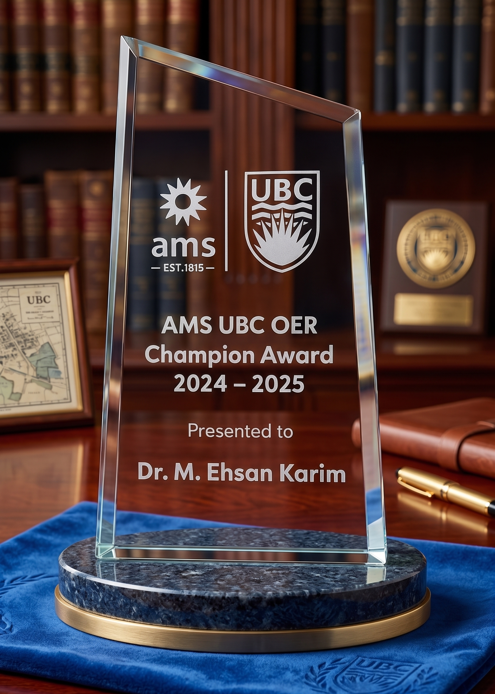

| Module | Topics.Indicators | Type | Descriptions |
|---|---|---|---|
| 1 | R for Data Wrangling (W) | Intro | Get to know R. |
| 2 | Accessing (A) Survey Data Resources | Core | Understand and source reliable national survey data. |
| 3 | Exploratory (E) Data Analysis | Core | Data Summarization and Visualization |
| 4 | Crafting Analytic Data for Research Questions (Q) | Core | Customize data to your research query. |
| 5 | Simulation (U) | Bonus | Understand the role of simulation in evaluating statistical estimators. |
| 6 | Causal Roles (R) | Core | Delve into the concept of confounding and its implications. |
| 7 | Predictive (P) modeling | Core | Introduction to key concepts of prediction modelling. |
| 8 | Complex Survey Data (D) Analysis | Core | Handle data sets obtained from complex survey designs. |
| 9 | Missing (M) Data Analysis | Core | Understand and tackle missingness in your data. |
| 10 | Propensity Score (S) Analysis | Core | Reduce confounding via propensity score matching, weighting, and stratification, with covariate-balance checks. |
| 11 | Machine Learning (L) | Core | Introduction to machine learning algorithms, and applications. |
| 12 | Intergrating Machine Learners in Causal (C) Inference | Core | Discusses the potential pitfalls and challenges in merging machine learning with causal inference, and a way forward. |
| 13 | Non-binary Outcomes (N) | Bonus | Statistical techniques to deal with complex or non-binary outcomes |
| 14 | Longitudinal Analysis (T) | Bonus | Longitudinal data analysis techniques |
| 15 | Mediation Analysis (I) | Bonus | Mediation: decomposing the total effect |
| 16 | Scientific Writing Tools (G) | Bonus | Tools and guides for scientific writing and collaboration. |
Advanced Epidemiological Methods
The Project
Welcome to a website designed to bridge a unique gap in the health research world. This platform specifically targets the complex intersection of health research and advanced statistics; a niche often perceived as challenging by many newcomers. Whether you’re taking your first steps into health research or you’re grappling with the intricacies of advanced statistical methods, you are in the right place. Here, we offer:
- Tutorials on using the R software, starting from the basics.
- Guides on tapping into genuine survey data from reputable sources like Statistics Canada and the US government’s Centers for Disease Control (CDC).
- Step-by-step walkthroughs on conducting and reporting comprehensive epidemiological studies.
This hub is a part of an open educational initiative, meaning it is available to everyone. We hope to raise the standard of health research methodology through this endeavor.
What We Aim to Achieve
We are on a mission to:
- Equip public health learners with hands-on experience.
- Teach the nuances of applying advanced epidemiological methods using real data.
- Offer a unique open textbook that’s enriched with interactive tools and quizzes for a self-paced learning experience.
Dive into Our Modules
Embark on a journey through
- 1 introductory module about R (indicator W),
- 10 core learning modules (letters in the parentheses: A, E, Q, R, P, D, M, S, L, C are the chapter indicators), and
- 5 bonus modules, with U, N, T, I, G being bonus chapter indicators.
Indicators are listed along with quizzes, R functions, and exercises associated with the corresponding chapters. Only key chapters have exercises.
Structure
The tutorial is designed with a consistent structure across all chapters to provide a cohesive and thorough learning experience. Here is what you can expect in each chapter:
Overview: The first page of each chapter offers a concise summary that outlines the key learning objectives, topics covered, and what you can expect to gain from the chapter. The overview page will also feature links to the data sources used in the tutorials as well as a form where you can report any bugs or issues you encounter. This helps you quickly grasp the chapter’s essence and set learning expectations.
Concepts: Selected core chapters will include a concept page, where materials (e.g., slides, video lessons, additional FAQs where available) will be included. All of the videos linked here (for lessons or labs) are hosted in YouTube, where users can automatically generate subtitles and captions.
Tutorial topics: Immediately following the overview/concepts, you will find in-depth tutorials that cover each topic in detail. These are designed to provide comprehensive insights and are spread across multiple pages for easier navigation and understanding.
Summary of R functions: Each chapter includes a succinct summary of the R functions used in the tutorials. This serves as a quick reference guide for learners to understand the tools they will be applying.
Chapter-specific quiz: For those interested in self-assessment, each chapter concludes with an optional quiz. This is a self-paced learning tool to help reinforce the chapter’s key concepts.
Web-App: A few chapters include shiny apps. Users can work with these apps directly from this website, or will have the option to download and run the app locally.
Practice exercises: Finally, practice exercises are available for selected chapters to help you apply what you have learned in a hands-on manner. These exercises are designed to reinforce your understanding and give you practical experience with the chapter’s topics. Some of these practice exercises may be used in future versions of the course, so you may see references to submitting assignments or the points value of a question in an assignment.
How Our Content is Presented
All our resources are hosted on an easy-to-access GitHub page. The format? Engaging text, reproducible software codes, clear analysis outputs, and crisp videos that distill complex topics. And do not miss our quiz section at the end of each module for a quick self-check on what you have learned. This document is created using quarto and R.
The content was primarily designed for a website in HTML format; however, a PDF version based on the website has also been created. Although the formatting is not perfect for this converted PDF, this PDF can be downloaded from here and used for offline reading.
How This Training Works in Practice
Pedagogical Workflow
The materials in this OER are designed to support a staged capstone-style workflow where learners move from a research question to a reproducible, defensible manuscript through structured peer review and iterative refinement.
Rather than treating statistical methods, computation, and writing as separate components, this training model integrates them into a single defensibility pipeline. Each stage of this workflow is supported by specific modules in this OER, which provide the conceptual and computational building blocks for analysis.
The workflow is summarized below:
| Stage | Week | Deliverables |
|---|---|---|
| Frame | 2–3 | Data orientation + question refinement (W, A, E modules) |
| Plan | 3–4 | Proposal + peer review (Q, R modules) |
| Build | 5–6 | SAP + Table 1 + reproducible data preparation (D, M modules) + SAP defense |
| Analyze | 7–8 | Analysis + reproducible code + Methods/Results (G module, Scientific Writing OER) + analysis defense |
| Draft | 11–12 | Full manuscript draft + full defense + structured peer review (Scientific Writing OER) |
| Final | 14 | Final paper + reproducible code + optional journal submission |
This workflow emphasizes repeated critique, reproducibility, and the ability to defend analytic decisions at each stage.
Related Resources, Skills and Policies
Relationship to Scientific Writing Training
While this OER focuses on analytic design, reproducibility, and statistical reasoning, the companion resource Scientific Writing for Health Research supports learners in translating their work into the standard IMRaD format (Introduction–Methods–Results–Discussion), navigating peer review, and preparing submissions to academic journals.
These should not be viewed as separate components. Together, they form a unified pipeline in which:
- analysis is developed with publication in mind
- writing is used to clarify and defend analytic decisions
- peer review is treated as a core research skill
Reproducibility standard
Analyses should be runnable end‑to‑end by another analyst on a fresh machine without manual intervention. In this training model, auditability is part of the scientific product—not an optional add‑on.
Peer review as a learnable research skill
This training model treats peer review as a core competency: giving constructive critique, identifying weaknesses, and proposing practical improvements. Named peer review and revision logic are integral to the workflow.
AI‑assisted workflows
AI tools may be used to support coding and debugging, but learners remain fully responsible for correctness, bias, security, and reproducibility. Substantive AI use should be transparent, and outputs should be critically audited.
Who this is for
This OER is designed for health researchers and trainees who want to apply epidemiological and statistical methods responsibly using real data. It is especially useful for learners with uneven backgrounds in statistics, epidemiology, or programming, as the material supports “just‑in‑time” learning.
Research outputs
Examples of peer-reviewed outputs produced through this workflow are shown below.
Click to show/hide publications table
Open Copyright License

Grant Applicants
Dive into this captivating content, brought to life with the generous support of the UBC OER Fund Implementation Grant and further supported by UBC SPPH. The foundation of this content traces back to the PI’s work over five years while instructing SPPH 604 (2018-2022). That knowledge has now been transformed into an open educational resource, thanks to this grant. Meet the innovative minds behind the grant proposal below.
| Role | Team_Member | Affiliation |
|---|---|---|
| Principal Applicant (PI) | Dr. M Ehsan Karim | UBC School of Population and Public Health |
| Co-applicant (Co-I) | Dr. Suborna Ahmed | UBC Department of Forest Resources Management |
| Trainee co-applicants | Md Belal Hossain | UBC School of Population and Public Health |
| Fardowsa Yusuf | UBC School of Population and Public Health | |
| Hanna Frank | UBC School of Population and Public Health | |
| Dr. Michael Asamoah-Boaheng | UBC Department of Emergency Medicine | |
| Chuyi (Astra) Zheng | UBC Faculty of Arts |
A presentation about the output of this grant in the OER Project Virtual Showcase and Poster Session (March 7, 2024):
Recognition
The PI was selected as a recipient of the AMS UBC OER Champion Award 2024–2025 in recognition of their outstanding commitment to equitable, inclusive, and innovative education—particularly through leadership in advancing affordable access via Open Educational Resources (OERs).

Acknowledgements
We also want to acknowledge contributors to the course material development, who were not part of this current OER grant, include Sebastian Santana Ortiz (particularly the Writing tools chapter), Pierce Gorun (particularly the Simulation chapter), Esteban Valencia, Derek Ouyang, Kate McLeod (from UBC School of Population and Public Health), Kamila Romanowski (from Experimental Medicine) and Mohammad Atiquzzaman (UBC Pharmaceutical Sciences). Numerous pieces of student feedback were also incorporated in order to update the content.
How to Cite
| Style | Citation |
|---|---|
| APA | Karim M. E., Epi-OER team ( 2026 ). Advanced Epidemiological Methods . Retrieved from https://ehsanx.github.io/EpiMethods/ on June 18, 2026 . |
| MLA | Karim M. E., Epi-OER team . " Advanced Epidemiological Methods ." Web. June 18, 2026 < https://ehsanx.github.io/EpiMethods/ >. |
| Chicago | Karim M. E., Epi-OER team . " Advanced Epidemiological Methods ." 2026 . Web. June 18, 2026 < https://ehsanx.github.io/EpiMethods/ >. |
| Harvard | Karim M. E., Epi-OER team ( 2026 ) ' Advanced Epidemiological Methods '. Available at: https://ehsanx.github.io/EpiMethods/ (Accessed: June 18, 2026 ). |
| Vancouver | Karim M. E., Epi-OER team . Advanced Epidemiological Methods . 2026 . [Online]. Available at: https://ehsanx.github.io/EpiMethods/ (Accessed June 18, 2026 ). |
| IEEE | Karim M. E., Epi-OER team , " Advanced Epidemiological Methods ," 2026 , [Online]. Available: https://ehsanx.github.io/EpiMethods/ . Accessed on: June 18, 2026 . |
| AMA | Karim M. E., Epi-OER team Advanced Epidemiological Methods . 2026 . [Online]. Available at: https://ehsanx.github.io/EpiMethods/ (Accessed June 18, 2026 ). |
- Epi-OER team: Hossain MB, Frank HA, Yusuf FL, Ahmed SS, Asamoah-Boaheng M, Zheng C (team is listed in order of contribution to the creation of this book)
The BibTex format can be downloaded from here.